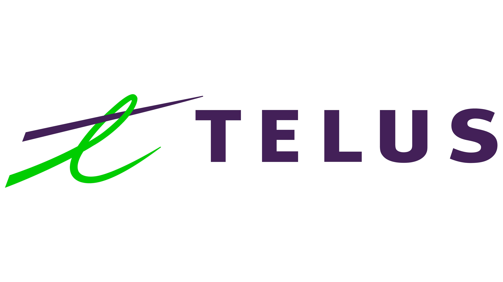
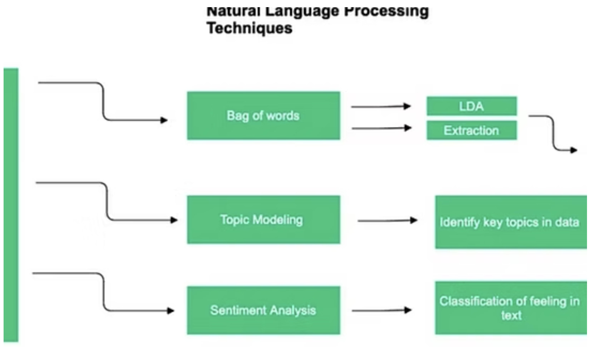
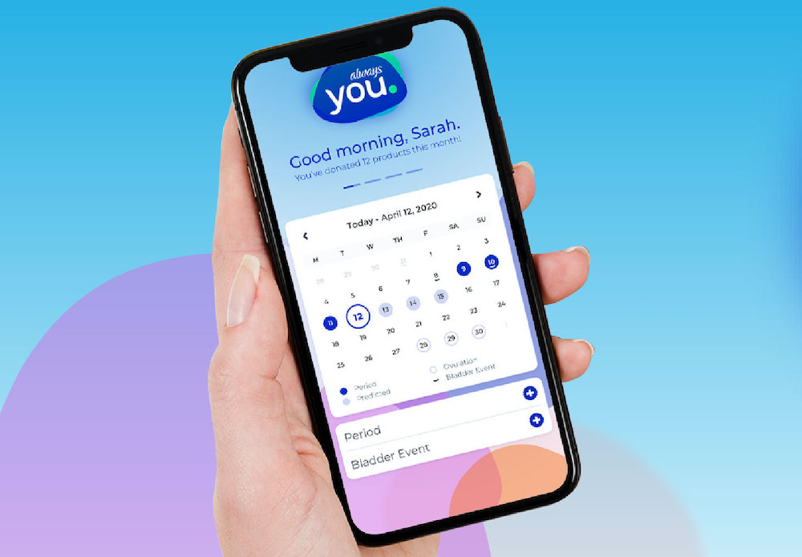
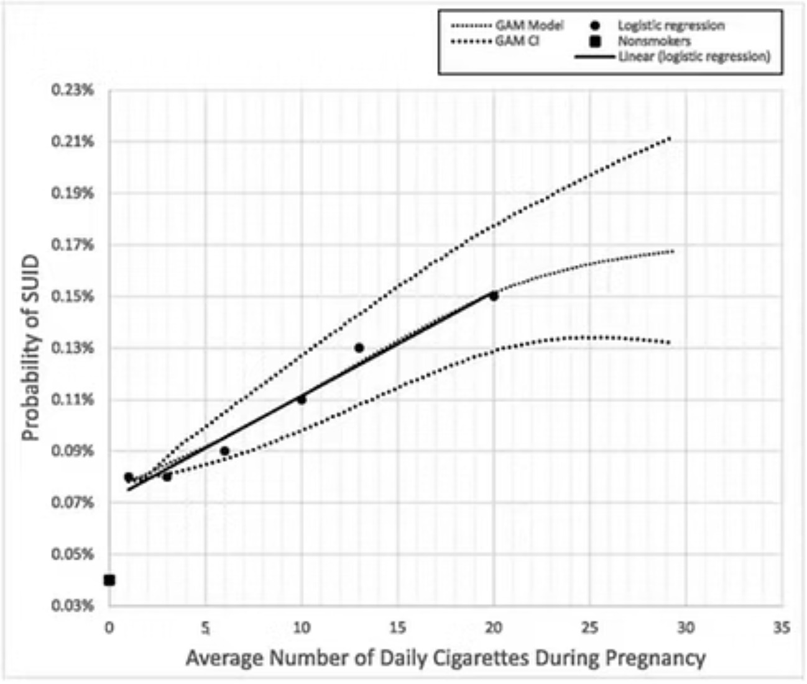
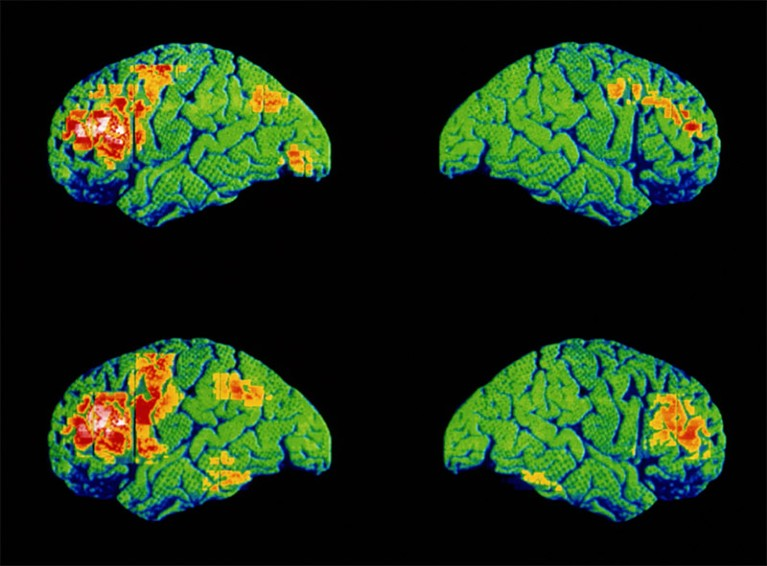
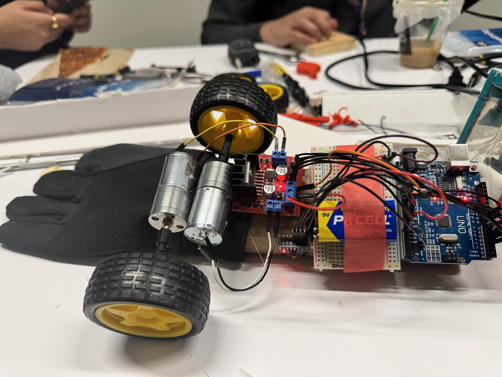
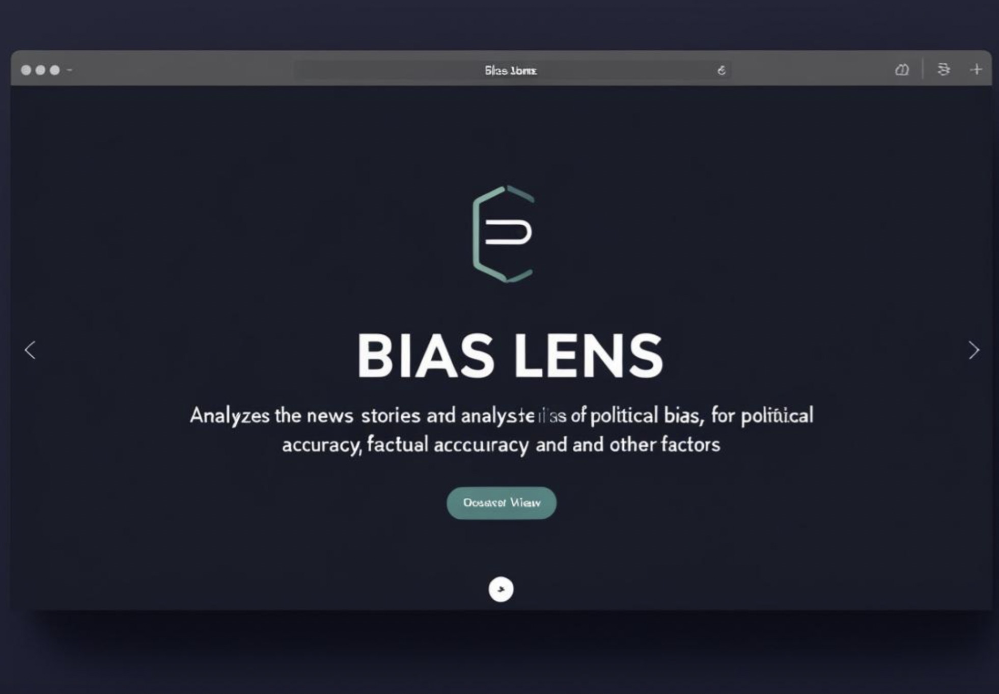
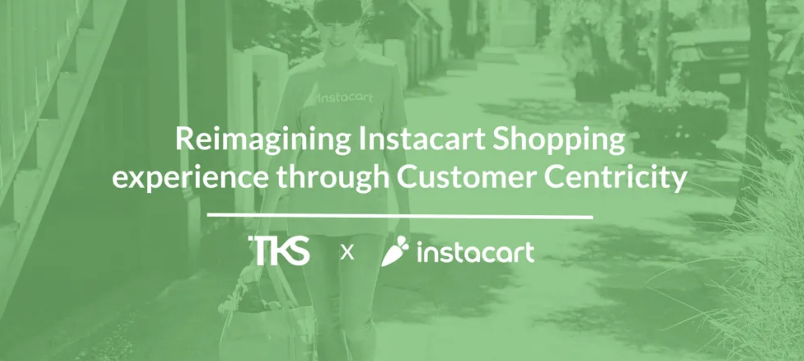

Projects
This section showcases my work from internships, personal projects, and collaborations.
Carbon Capture Estimation Using Satellite and Plant Imagery
TELUS - Software Engineering Intern
Built a full-stack AI pipeline leveraging Meta’s SAM to estimate carbon capture from plant imagery, integrating computer vision, ML, and environmental data.
Project Flourish: Detecting Suicidal Ideation in Social Media content
Project with support from Microsoft and American Foundation for Suicide Prevention
Developed an NLP model trained on 100K+ social media posts to detect suicidal ideation. The model powers a real-time crisis alert system, deployed via Flask.
Always You: Menstrual Health Tracking Feature
Procter & Gamble - Software Engineering Intern
Developed a well-being feature in the Always You app using React and JavaScript, improving user retention by 7.5%.
LLM Optimiziation using Pruning, Efficient Attention & Optimization
TELUS collaboration w/ Vector Institute
Fine-tuned an LLM-powered customer support tool using LLaMA-3 and RAG, reducing computational load by 40%.

Maternal Health Risk Prediction with Deep Learning
Microsoft - Software Engineer Collaborator
Developed RNN classification and GAM models on 20,000+ maternal health records, improving SUID prediction accuracy by 27%.
Schizophrenia Classification via Gut Microbiome Analysis
Massachusetts Institute of Technology (MIT)
Worked with 7 PhD researchers to develop a schizophrenia classification model analyzing 12,000+ gut microbiome samples.
Tremor-Correcting Sleeve Using C++ and Arduino
University of Toronto Robotics Hackathon
Developed a wearable tremor-correcting sleeve that detects hand tremors using IMU sensors and counteracts them through real-time stabilization feedback.
BiasLens: AI-Powered Search Customization
Independent Project
Developed a full-stack web app that enhances search customization using AI to analyze political bias sentiment.
Instacart Consulting Project
Collaboration with Instacart
Collaborated on a 5-week consulting challenge to reimagine Instacart’s shopping experience with a focus on customer engagement, transparency, and personalization.
